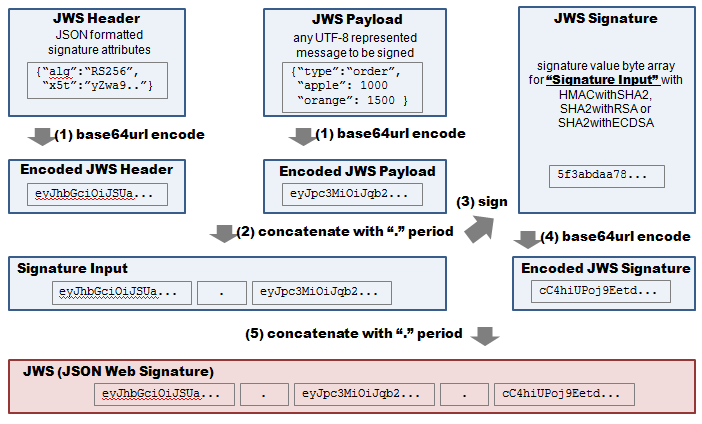

FEATURES
- sign and verify a JSON Web Token(JWT) and Signature(JWS) with RSA/RSAPSS/ECDSA algorithm
- implemented by pure JavaScript
- work on any modern browsers including smart phones
- supports all algorithms except ES512 (i.e. jsjws now supports HS256, HS384, HS512, RS256, RS384, RS512, ES256, ES384, PS256, PS384, PS512)
- powerful and easy 'sign' and 'verify' method.
- used with naked key, X.509 certificate and PKCS#5/PKCS#8 encrypted/plain private/public key
- supports UTF-8 characters including CJK, Latin and non-ASCII in JWS Header and Payload
- sign and verify a JSON Web Signature JSON Serialization (JWS-JS)
NEWS
- 2015-May-29:
- Now jsjws is merged into jsrsasign 4.8.0. There is no further update at github jsjws repository. Please watch jsrsasign.
- 2015-Apr-26:
- 3.2.2 released. Bugfix release for safe JSON strings and samples..
- 2015-Apr-19:
- 3.2.0 released. Mitigation for some signature replacement attacks in JWS.verify. Great thanks to Alberto Pose for suggestions.
- 2015-Apr-04:
- 3.1.0 released. alg=none support have been removed in the verify method to resolve the same issue. Thank you kindly, Adriano Raiano, David Halls, Alberto Pose and JPCERT/CC.
- 2013-Oct-07:
- Node.js npm module of jsrsasign is now registered in the repository. It also includes this 'jsjws'.
- 2013-Sep-24
- 3.0.2 released. Now supports HS384 (HmacSHA384) signature by CryptoJS patch.
- 2013-Sep-04
- The jsjws page for iPhone and Android is now available. JWT siging/verifying demo for smart phone is also available.
- 2013-Aug-29
- Document "Algorithm Support Matrix for JWT/JWS Implementations" added.
- 2013-Aug-28
- 2013-Aug-27:
- Release 3.0.0
- provides powerful and easy signing and verifying method.
- add ECDSA and HMAC support
- add PKCS#5 and PKCS#8 encrypted/plain private key support
- QUnit unit tests added
- 2013-Jul-23:
- Release 2.0.1 to fix RSAPSS signatures.
- 2013-Jul-21:
- Release 2.0 is now available to support PS{256,512} (i.e. SHA256/512withRSAPSS) signature algorithm.
- 2012-May-21:
- Release 1.2 is now available to add JWS-JS parallel signature support.
- 2012-May-07:
- Release 1.1 is available. Following features are added.
- UTF-8 string support in JWS Header and Payload
- sign JWS with PEM formatted PKCS# RSA private key without passcode
- verify JWS with PEM formatted X.509 certificate
DEMO
- sign JWS with naked private key
- verify JWS with naked public key
- sign JWS with PKCS#1 private key
- verify JWS with X.509 certificate
- sign JWS with RSAPSS
- verify JWS with RSAPSS
- generete JWS-JS
- generete JWS-JS by existing JWS
- verify JWS-JS
DOWNLOAD
- Use git to clonse the official jsrsasign repository
git clone git://github.com/kjur/jsrsasign.git
- Alternatively, you can download a zip file for the latest development version or a previous releases.
API DOCUMENT
The 'jsjws'(JSON Web Signature JavaScript Library) JavaScript API document is available here.LICENSE
The 'jsjws'(JSON Web Signature JavaScript Library) is licensed under the terms of the MIT license reproduced which is simple and easy to understand and places almost no restrictions.MY RELATED PROJECT
RELATED LINKS
INCLUDED THIRD-PARTY LIBRARIES
- Tom Wu's jsbn and RSA library (BSD License)
- Paul Johnston's JavaScript SHA2 libraries (BSD License)
- json-sans-eval - A fast and secure JSON parser in JavaScript (Apache License 2.0)
WHAT IS JWS?
JSON Web Signature(JWS) is a simple signature format for signing small JSON data
and will be used to exchange an authentication data for
OpenID Connect.
Any JWS data is represented in a printable text since it consists of
Base64URL encoded characters and period('.').
Following figure shows how JWS signature will be generated.

See following pages for detail.
- Slides: Propposed Document for JOSE: JWS-JWE-JWK, Mike Jones, IETF 82, Nov 2011
- IETF Internet Draft: JSON Web Signature (JWS) draft-jones-json-web-signature-04
WHAT IS JWS-JS?
JSON Web Signature JSON Serialization (JWS-JS) is a signature format to
sign a data by a number of signers independently.
This way of signing is called parallel or independent signature in general.
Following figure shows how JWS-JS signature will be generated.